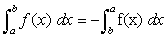

Integral definida
Integral definida
Dada una función f(x) y un intervalo [a,b], la integral definida es igual al área limitada entre la gráfica de f(x), el eje de abscisas, y las rectas verticales x = a y x = b.
La integral definida se representa por .
∫ es el signo de integración.
a límite inferior de la integración.
b límite superior de la integración.
f(x) es el integrando o función a integrar.
dx es diferencial de x, e indica cuál es la variable de la función que se integra.
Propiedades de la integral definida
1. El valor de la integral definida cambia de signo si se permutan los límites de integración.

2. Si los límites que integración coinciden, la integral definida vale cero.

3. Si c es un punto interior del intervalo [a, b], la integral definida se descompone como una suma de dos integrales extendidas a los intervalos [a, c] y [c, b].

4. La integral definida de una suma de funciones es igual a la suma de integrales·
5. La integral del producto de una constante por una función es igual a la constante por la integral de la función.
Función integral
Sea f(t) una función continua en el intervalo [a, b]. A partir de esta función se define la función integral:
que depende del límite superior de integración.
Para evitar confusiones cuando se hace referencia a la variable de f, se la llama t, pero si la referencia es a la variable de F, se la llama x.
Geométricamente la función integral, F(x), representa el área del recinto limitado por la curva y = f(t), el eje de abscisas y las rectas t = a y t = x.
A la función integral, F(x), también se le llama función de áreas de f en el intervalo [a, b].